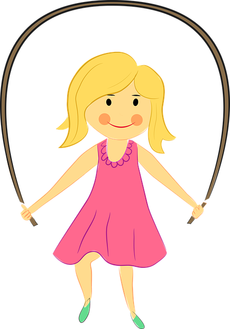
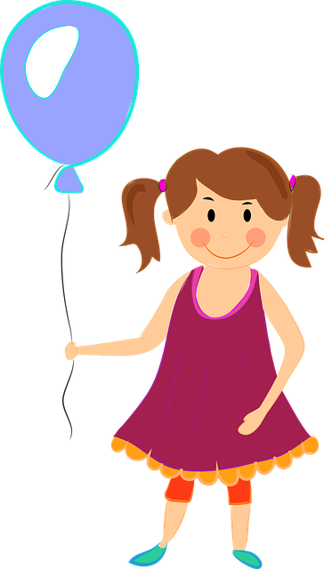
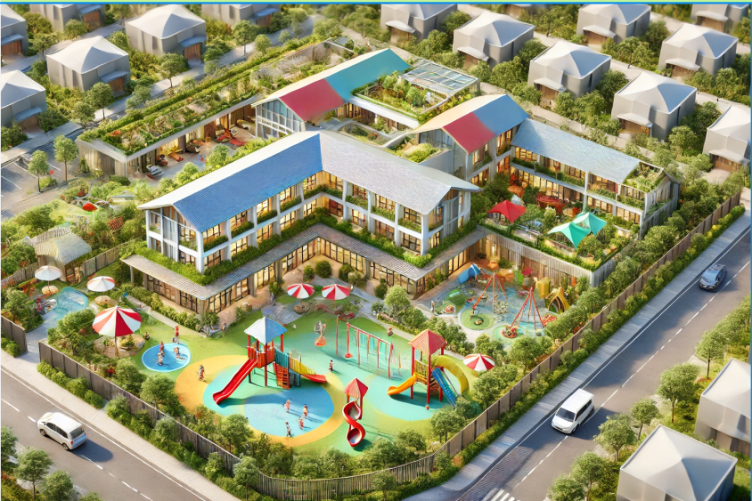
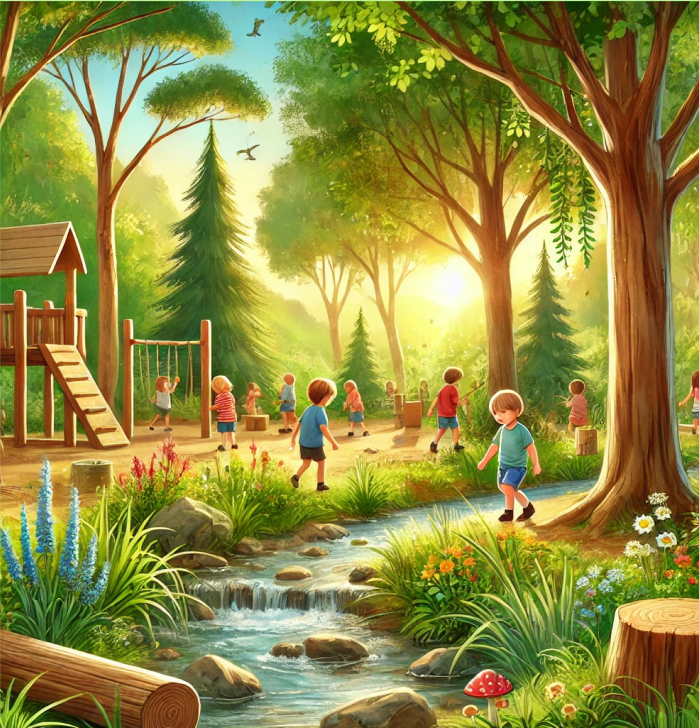
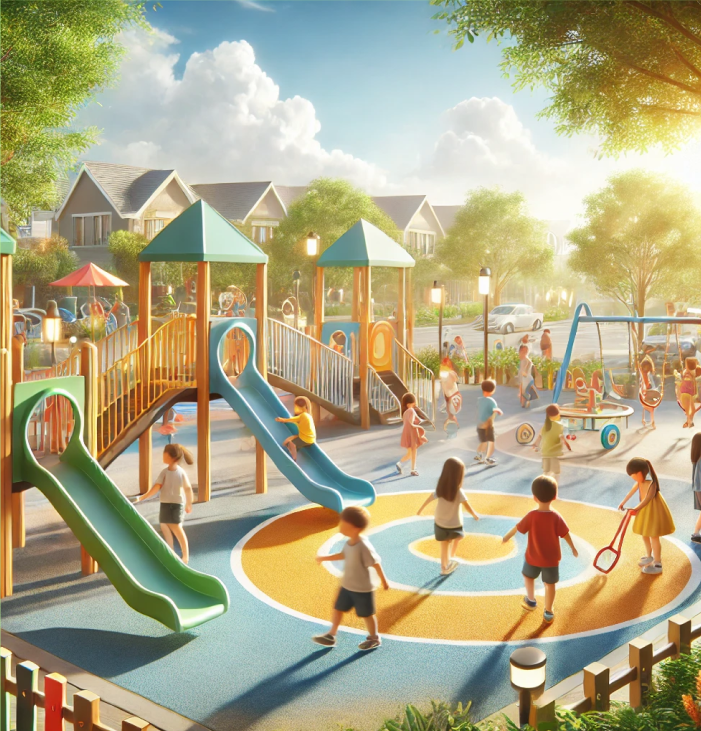
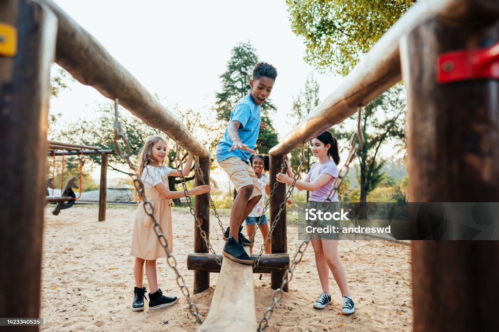

Grundlaget
for en tryg
barndom
Sammen
skaber vi
trivsel
Respekt
Nysgerrighed
og omsorg
Vi handler
for børnens
bedste



Trivsel & udvikling i trygge rammer
Vi skaber glæde,
fællesskab og læring med fokus
på værdier

Leg i naturen
Hos Katholt får børnene oplevelser i naturen,
der vækker deres nysgerrighed og sanser.
Vi prioriterer udeliv med plads til fordybelse,
eventyr og læring i naturens egen legeplads.
Her lærer børnene om naturens cyklus og får
frisk luft og bevægelse hver dag.

Nysgerrighed der skaber læring
Vi ser verden gennem børnenes øjne og opmuntrer deres nysgerrighed som drivkraft for udvikling.
Hos Katholt prioriterer vi leg og læring, hvor børn kan udforske og undre sig i deres eget tempo.
Ved løbende at opsøge ny viden og evaluere vores praksis sikrer vi et dynamisk miljø, der styrker både kreativitet og engagement.

Ordentlighed som fundament
Hos Katholt er ordentlighed en hjørnesten
i vores værdier. Vi skaber et miljø præget af
respekt, faglighed og ærlighed, hvor børn,
forældre og personale mødes i en atmosfære af
tillid og dialog. Med høj kvalitet og omsorg
arbejder vi hver dag på at skabe trygge rammer,
der styrker både trivsel og udvikling – altid med
fokus på at være gode rollemodeller.

Leg på legepladsen
Vores legeplads er en verden af muligheder,
her kan børnene boltre sig, udforske og styrke
både motorik og fantasi i trygge, inspirerende rammer.
Legepladsen er designet til leg og samvær,
hvor børnene kan skabe minder og udvikle sociale færdigheder.